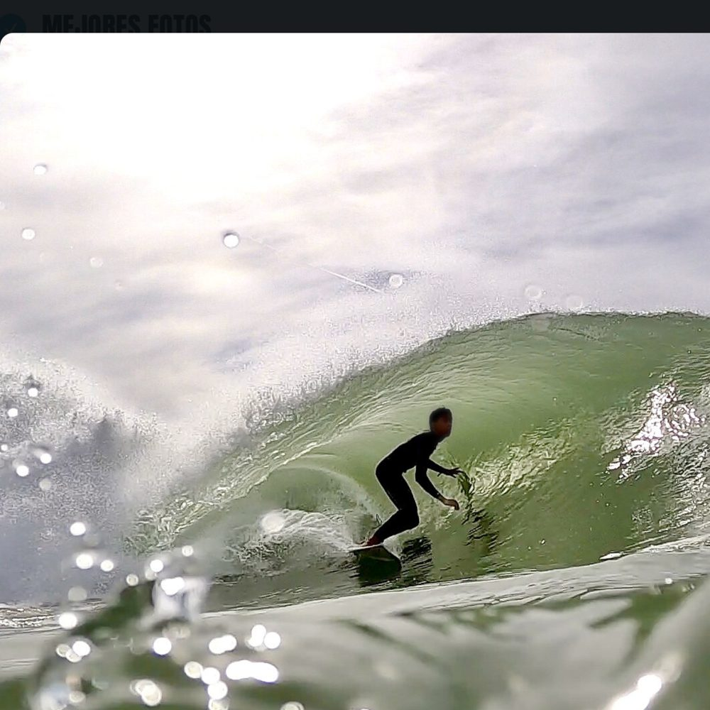
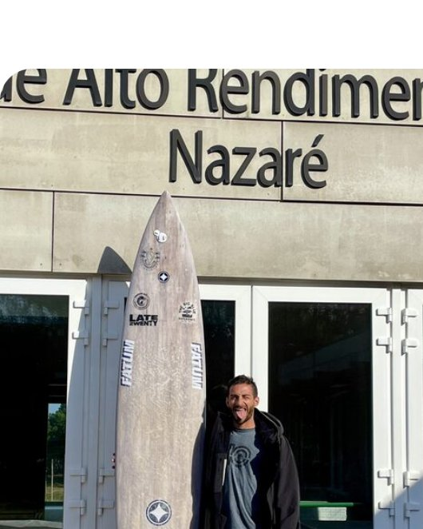

Una semana de surf, respiración y apnea en una de las mejores playas de Europa para empezar. Con un instructor que entrena en Nazaré y te enseña a mantener la calma en el agua.


El orden se ajusta a las olas y al mar de cada día.
No incluye vuelos, traslado desde Lisboa ni seguro de viaje. Te ayudamos a organizar cómo llegar.
Se reserva con una seña y el resto se paga en cuotas. Si surge una emergencia, te queda un crédito para otra experiencia de SUP Aventura.
Sí. Muchos riders vienen solos y el grupo se arma desde la cena de bienvenida. Es un viaje abierto a mujeres y hombres.
Sí, el viaje está pensado para empezar de cero. Las clases son por nivel y la respiración te ayuda a sentirte con confianza en el agua.
En septiembre el mar está en su punto más templado del año, alrededor de 20 °C. Surfeamos con traje de neoprene, que está incluido.
Baleal queda a una hora del aeropuerto de Lisboa. Hay buses a Peniche y podemos organizar un traslado en grupo. Te ayudamos a armarlo.
Con una seña reservás tu lugar y el resto lo pagás en cuotas antes del viaje.
Los lugares son pocos y los primeros 4 tienen precio early. Escribime y te aviso apenas abramos.
Escribime PORTUGAL